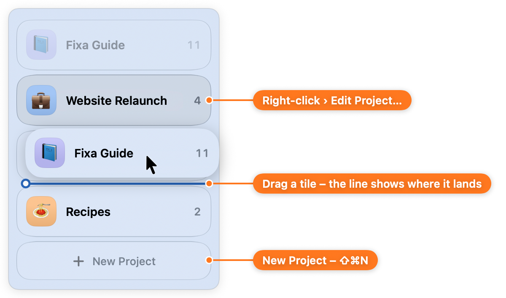
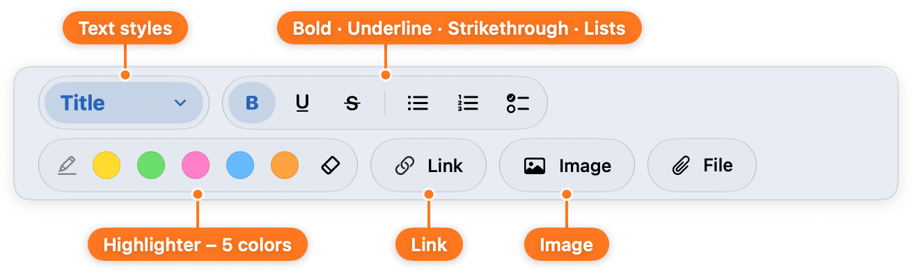
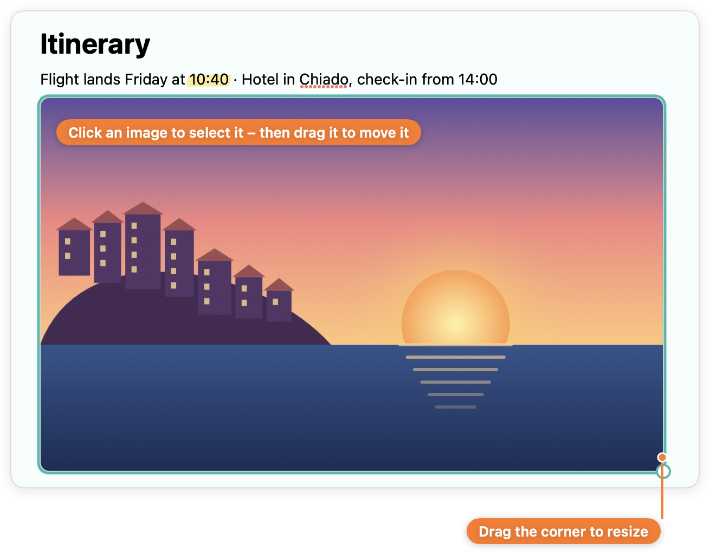
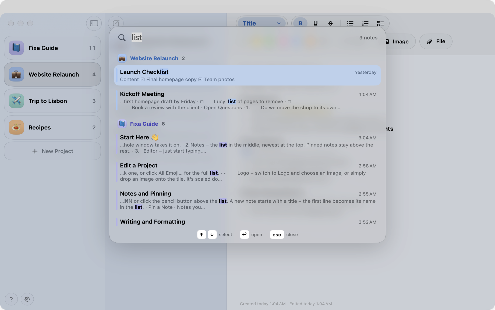
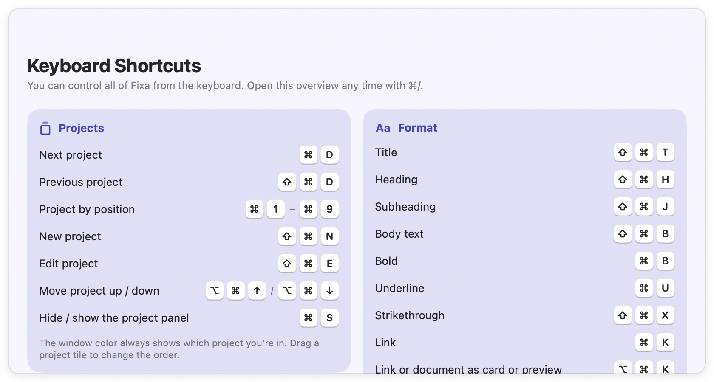
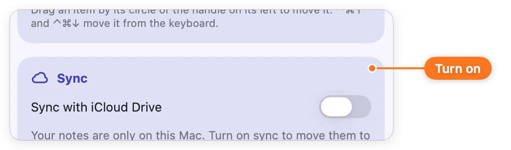
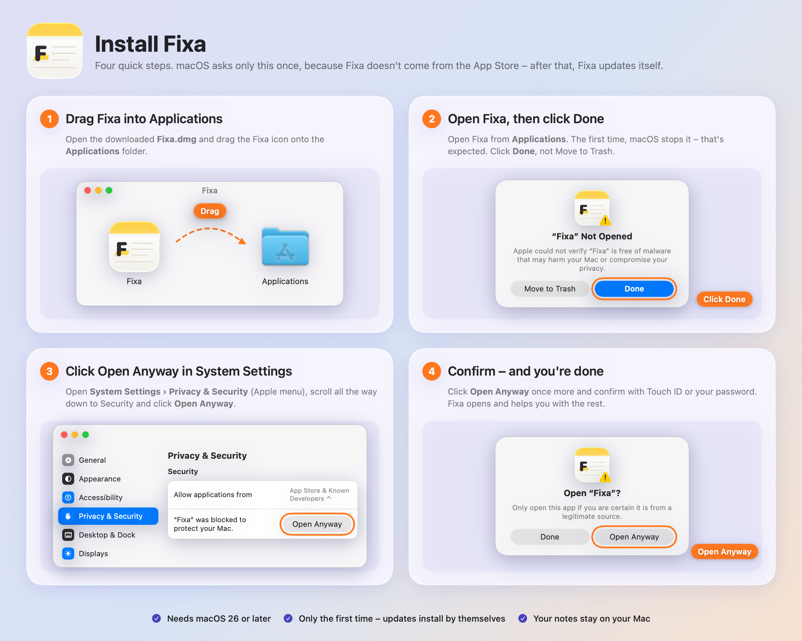

🗂️
Projects, not folders
Every note belongs to a project. Give it a color and an emoji or your own logo, and drag the tiles into any order.
Fixa is a calm, fast notes app for your Mac. Every note lives in a project, and the whole window takes on that project’s color – so you always know where you are.
Everything stays in this browser on this device: your changes are still here after a reload, and nothing is sent anywhere.
Fixa does fewer things than the big note apps – and does them well.
Every note belongs to a project. Give it a color and an emoji or your own logo, and drag the tiles into any order.
Switch projects and the whole window smoothly turns that project’s color. Twelve soft pastels, or any color you like.
Five marker colors that look like a stroke of a pen – not a box behind the text.
Bullets, numbers and to-dos. Check items off, drag them around, or just type - or [] to start a list.
Show a link as text, a neat card, or a big preview with the page’s picture.
Drop, paste or pick an image. Resize it by the corner and drag it wherever you want it.
Drop in a PDF, Word or Pages file. It shows its first page, opens right in Fixa with a click, and syncs with the note.
⌘F searches all projects at once, grouped and colored by project.
Everything has a shortcut. Press ⌘/ to see them all.
Turn on iCloud Drive sync and your notes stay the same on every Mac. Nothing is overwritten blindly, and every change is kept in the history.
A new version shows up with what’s new. One click, and Fixa restarts with your notes saved.
Your first start comes with a Fixa Guide project that shows every feature, with pictures.
Notes are plain RTF files on your Mac or in your iCloud Drive. No account, no tracking.

Projects sit on the left as glass tiles with their color and emoji – or your own logo. Drag a tile to reorder it, or use ⌥⌘↑ ⌥⌘↓.
Pin the notes you need most and they stay on top of the project.

Title, heading and text styles, bold, underline, strikethrough, lists, checklists, five highlighter colors, links and images – all in the toolbar, nothing hidden in menus.

Drag an image into a note and it lands exactly where you let go. Click it to select it, drag the corner to resize, or drag it somewhere else.

Press ⌘F and type. Results from every project, grouped and colored, with the words you’re looking for highlighted.

Fixa works entirely from the keyboard. Arrow keys move between notes, Return starts typing, Escape takes you back.

Turn on sync and Fixa keeps your notes in iCloud Drive. Every change on every Mac is recorded, nothing is overwritten blindly, and if two Macs disagree, Fixa asks you.
Fixa isn’t from the App Store, so macOS asks you to confirm it once. After that, updates install by themselves. The same picture is in the download, too.

Yes. It’s a personal project, shared with friends.
Any Mac with macOS 26 Tahoe or later – Apple silicon or Intel.
Apps from outside the App Store need a paid Apple developer certificate to skip that warning. Fixa doesn’t have one, so macOS asks you to confirm it once – see Install. Updates come from inside Fixa and don’t ask again.
Fixa checks for a new version once a day while you’re using it. You’ll see what’s new and update with one click – your notes are saved and Fixa opens again. Only updates signed by the author are installed.
In a folder on your Mac, or with sync turned on in iCloud Drive › Fixa. Every note is a regular RTF file, so you can open it even without Fixa – in TextEdit, for example.
Not yet – Fixa is a Mac app. Sync works between all your Macs signed in to the same Apple Account.